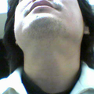

最後に人前で吹いたのが１月かな？ その後はさっぱり。
喇叭自体はいつでも吹けるように居間のテレビの上に出しておいてある。 しかし、ここのところ手にとることもないので、埃が…。
手に取っていた頃何をしていたかというと、ひたすら最低音から最高音(Hi-Cね)までクロマチックで上がって降りるというのをやっていた。上がるのに一息、下がるのに一息、って感じになってからは、Hi-Cの上の音を出す、というのと、ミュート付きで同じ音域を出す、というのに凝っていた。
おかげさまで、音域に関してはだいぶ慣れてきた。常に吹いてなくても音域がそうそう狭まるもんでもない、というのもわかった。
昨日今日あたり試してみたが、やっぱり退化はしていないようだ。 ただし、耐久力は維持できない。 これは吹かないとだめでしょう。
しかし、そっから先に行くには、やはり時間をかけねばならんのだな。
もともと喇叭を始めたきっかけは、小学生のときやってた、というのもあるが、基本的には歌のためである。がんがん歌ってないときでも、喇叭を吹くことにより発声関連器官のこなしになるかなというもくろみである。
喇叭吹きと相撲取りは歌がうまいというイメージがあるんでねえ＾＾；
そんな感じだし、もともと楽器を弾きこなすこと自体に喜びを感じるタイプではないんで、自分がやりたい音楽に直接的にかかわってくる部分が少ないので、どうしても後回しになっちゃうんだなあ。
やるとしたら、基本的にはホーンセクションがやりたいんですよね。メンフィス・ホーンズとかTOPホーン・セクションとか。ああいう感じで、必要なバンドがいれば、ほいほい行ってぱかぱかやっちゃいます。というようなのがやりたいんだけどなあ。
まあ、これも一人ではできないから、機が熟するまではせいぜい音域と耐久力を醸成しとくんだな。
歌の年末時記録はかかないのでここについでに書いておくが、今年の変化としては、顔つきが変わったというのがある。
年齢的なものではなくて(そこ、笑わないように！)、これはあきらかに喇叭のせいだと思うのだが、顔の下半分の筋肉が発達してきた。で、こないだ、ふと鏡を見てたら、首の感じもだいぶ変わっているではないか！これも喇叭と発声の影響かなあ。
もともと、あまりめりはりのある首ではないのだが、なんか声帯の回りが少しせり出してきて、喉仏状のものまでうっすらと…これは気のせいかな。
髭が汚くてもうしわけないけど、こんな感じになってます。
とはいうものの、なんかいい使い道があったら、来年は使いたいねえ喇叭も。